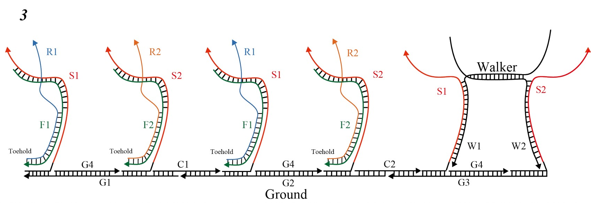

Reverse Theory
We satisfy the specification going in one direction, but specifications to return in the opposite direction are also necessary when considering practicality, so explain the principle of operation going back in the opposite direction Suppose a situation in which the walker has progressed from the left to the right. Next, I would like to return from the right to the left, but Spot and Fuel are forming a duplex and it is impossible to combine the foot and Spot of walker. Therefore, in order to separate the double-stranded bond between Spot and Fuel, R1 and R2 of single-stranded DNA are added (Fig.1).

R1 and R2 are designed to bind the single-stranded regions of F1 and F2 which are bared before the double-stranded DNA of Spot and Fuel (Fig.2).

Therefore, when R1 and R2 are administered, a strand displacement reaction originating from the single-stranded region of F1 and F2 occurs and becomes waste of R1-F1, R2-F2 (Fig.3) Spot is a single chain having a hairpin structure Return to DNA (figure.4). After this, like Flow explained in Design, adding Fuel will progress the reaction with Spot one foot at a time. However, in this case, F1 and F2 are single-stranded DNA designed so that the reaction proceeds from the right foot (W1). "Ground returns to the state before reacting with Walker, and it progresses to the original position from here. With the movement of the walker above, it is possible to slide the box.
{kind=link}
{kind=link}